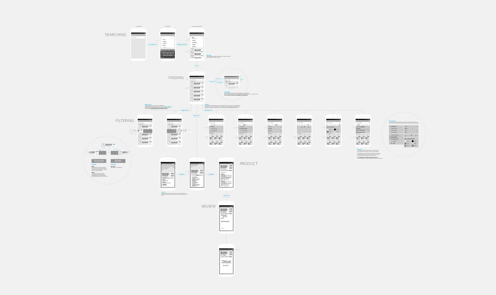
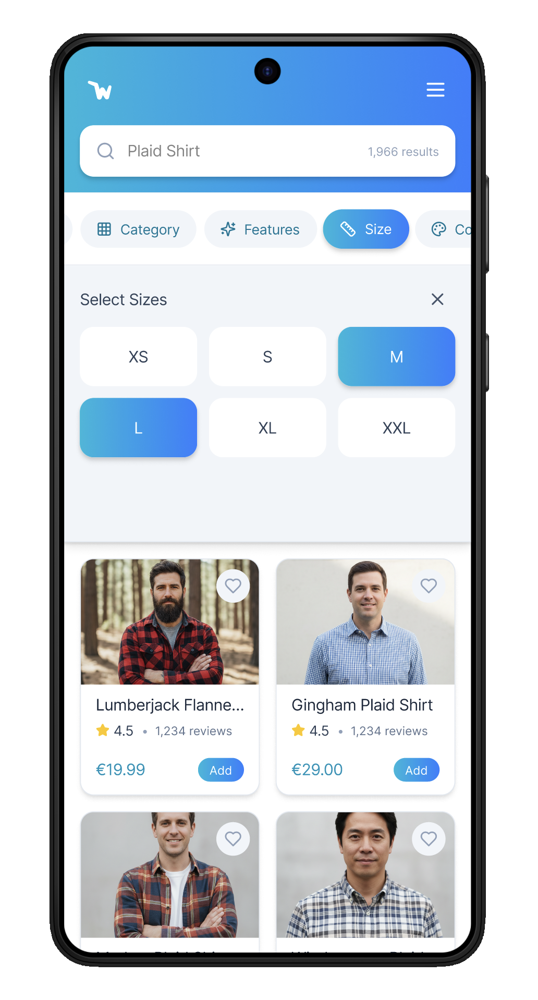
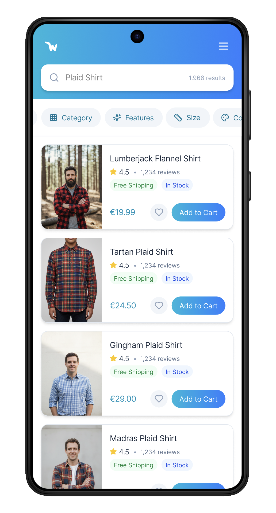
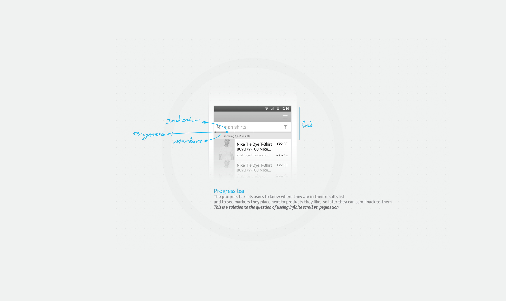

Massive product catalogs create choice paralysis. I rethought the three stages of discovery: finding a relevant product, narrowing the list without losing context, and navigating a long scroll without losing your place.

02 / Commerce framework
A mobile-first e-commerce framework for finding, filtering, and navigating thousands of products.
The work validated context-preserving patterns for small screens, even though the company pivoted before full implementation.

Massive product catalogs create choice paralysis. I rethought the three stages of discovery: finding a relevant product, narrowing the list without losing context, and navigating a long scroll without losing your place.

Standard search bars force a choice between history, suggestions, or results. I designed a unifying search interface that showed all three together, including real products as the user typed, preventing dead ends before they occurred.
Can’t play the preview? Download the interaction example.
On mobile, a filter menu can block the content and make people remember what they were looking at. The transparent layer kept the product grid visible behind the overlay, so every filter choice had immediate, legible feedback.


Infinite scroll is fluid but forgetful. I designed visual markers that let people pin a place in the scroll, plus a pop-up detail view that preserved the background position on mobile.
The company pivoted before full implementation, but the decisions proved prophetic: the layered filtering concept aligned with patterns later adopted in products such as Google Maps. The work validated the value of preserving context on small screens.